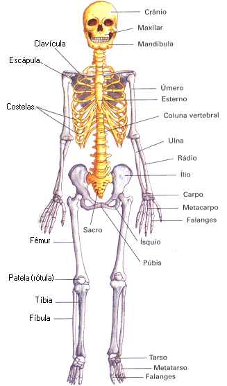

“Quando nos referimos à capacidade de movimentação, estamos falando de uma ação voluntária, que um ser vivo faz por si próprio”. Os animais se movimentam rápida e ativamente, nadando, correndo ou voando sendo, portanto, mais facilmente identificável. Movimentando-se os animais realizam, com mais facilidade, algumas tarefas básicas, como buscar alimentos, se defender e atacar.
Os seres vivos reagem a estímulos
Todos os seres vivos respondem a estímulos que podem ser físicos ou químicos, como pôr exemplo, a mudança de temperatura, de luminosidade, de pressão ou de composição química do ambiente em que vivem.
Nos animais mais evoluídos, pode-se referir à irritabilidade complexa, através da excitação de um sistema nervoso mais evoluído, que é uma resposta mais elaborada a um estímulo. Como exemplo de maior desenvolvimento, temos o homem, capaz de emitir respostas muito complexas ao meio. Dirigir um automóvel, por exemplo.
|
O ESQUELETO
Walter Nieble de Freitas
Por causa de um esqueleto
Corri a não poder mais:
Assustado entrei em casa
E contei tudo a meus pais
“O esqueleto, seu bobinho,
Nunca foi assombração:
É ele um conjunto de ossos
Dispostos em armação.
Sua função principal
É manter o corpo ereto;
Tem cabeça, tronco e membros
Todo esqueleto completo.
Preste, pois, muita atenção,
Guarde bem, jamais se esqueça:
Somente de crânio e face
Se constitui a cabeça.
O tronco tem só três partes,
Vou dizer-lhe quais são elas:
A coluna vertebral,
O esterno e as costelas.
Os membros são conhecidos:
Os de cima superiores;
E os que servem para andar,
São chamados inferiores”.
Até agora não compreendo
Como é que fui tolo assim:
Correr de um pobre esqueleto
Tendo outro esqueleto em mim!
|
 |
| Estímulo | Reação |
|---|---|
| Medo de assombração | |
| Ouvir a explicação do pai | |
| Conhecer o esqueleto humano |